Hierarchical Clustering for Organic Products Store
Francis Ngema
2024-06-07
Introduction
Customer segmentation, the practice of grouping customers with similar characteristics, is crucial for success in today’s competitive market. Understanding customer behaviour and preferences allows businesses to tailor their marketing strategies for maximum effectiveness. Clustering, a machine learning technique, plays a vital role in customer segmentation. It helps identify distinct customer segments based on shared attributes related to demographics, purchasing behaviour, and promotional engagement.
This study utilises a clustering algorithm to segment customers within a dataset containing these relevant features. The analysis follows a sequential approach. First, a clustering algorithm is applied to identify distinct customer segments based on their attributes. Second, the quality and distinctiveness of the identified segments are assessed using appropriate metrics and visualisations. Third, the findings are summarised by providing detailed insights into the characteristics of each customer segment.
Finally, the study examines the potential business applications and offers actionable recommendations based on the segmentation analysis. The study aims to leverage data-driven insights to empower businesses with targeted marketing strategies and improved customer engagement by following these steps: data description, data exploration and visualisation, feature engineering and scaling, clustering analysis, conclusion and business implications.
Data Description
The dataset “organics_cleaned.csv”(https://raw.githubusercontent.com/amusasuxes/DATASETS/master/organics.csv )contains various features related to customer demographics, purchasing behavior, and promotional engagement (Table 1.). This data is used for segmenting customers and understanding their behavior. The dataset includes both numerical and categorical variables.
Table 1. Variables for customer data
| Variable | Type | Description |
|---|---|---|
| Affl | Numerical | Indicates the wealth status of the customers. |
| Age | Numerical | Represents the age of the customers. |
| LTime | Numerical | Indicates the length of time customers have been loyal to the brand. |
| Spend | Numerical | Represents the amount of money spent by the customers. |
| Gender | Categorical | Represents the gender of the customers. |
| PromClass | Categorical | Indicates the class of promotions targeted at customers. |
| Gender_code | Categorical | Numerical encoding of the Gender variable. |
| PromSilver | Categorical | Indicates whether customers received silver level promotions. |
| PromTin | Categorical | Indicates whether customers received tin level promotions. |
| PromGold | Categorical | Indicates whether customers received gold level promotions. |
| TargetBuy | Categorical | Indicates whether the customer is targeted for buying. |
Summary Statistics of Key Numerical Variables
## Rows: 15401 Columns: 11
## ── Column specification ────────────────────────────────────────────────────────
## Delimiter: ","
## chr (2): Gender, PromClass
## dbl (9): Gender_code, PromSilver, PromTin, PromGold, Affl, Age, LTime, Spend...
##
## ℹ Use `spec()` to retrieve the full column specification for this data.
## ℹ Specify the column types or set `show_col_types = FALSE` to quiet this message.# Select key numerical variables
selected_data <- dplyr::select(data, Affl, Age, LTime, Spend)
# Calculate and display summary statistics
summary_stats <- summary(selected_data)
print(summary_stats)## Affl Age LTime Spend
## Min. : 0.000 Min. :18.00 Min. : 0.000 Min. : 0.01
## 1st Qu.: 6.000 1st Qu.:43.00 1st Qu.: 4.000 1st Qu.: 0.01
## Median : 8.000 Median :53.00 Median : 5.000 Median : 2000.00
## Mean : 8.826 Mean :53.47 Mean : 6.557 Mean : 4412.23
## 3rd Qu.:11.000 3rd Qu.:64.00 3rd Qu.: 8.000 3rd Qu.: 6000.00
## Max. :34.000 Max. :79.00 Max. :38.000 Max. :296313.85Table 2: Summary Statistics of Numerical Variables
| Variable | Minimum | 1st Quartile | Median | Mean | 3rd Quartile | Maximum |
|---|---|---|---|---|---|---|
| Affl | 0.000 | 6.000 | 8.000 | 8.826 | 11.000 | 34.000 |
| Age | 18.00 | 43.00 | 53.00 | 53.47 | 64.00 | 79.00 |
| LTime | 0.000 | 4.000 | 5.000 | 6.557 | 8.000 | 38.000 |
| Spend | 0.01 | 0.01 | 2000.00 | 4412.23 | 6000.00 | 296313.85 |
Interpretation of Summary Statistics
Table 2 summarises the key numerical variables used for customer segmentation. Affluence (Affl), which measures customer wealth status, ranges from 0 to 34, with a mean of 8.826. This indicates a spread of customer income levels. The Age variable spans from 18 to 79 years old, with a mean age of 53.47. Loyalty Time (LTime) captures the duration of customer loyalty and varies considerably, ranging from 0 to 38 years, with a mean of 6.557 years.
Finally, Spend reflects the amount of money customers have spent, exhibiting a significant spread from 0.01 to 296,313.85, with a mean spend of 4,412.23. These summary statistics offer insights into the central tendencies and dispersion of these key customer attributes, laying the groundwork for the subsequent clustering analysis.
Data Exploration and Visualization
The analysis began with data preparation and exploration. Initial steps involved loading the data and inspecting its structure through techniques such as displaying initial rows, generating summary statistics, and identifying missing values.
## spc_tbl_ [15,401 × 11] (S3: spec_tbl_df/tbl_df/tbl/data.frame)
## $ Gender : chr [1:15401] "F" "M" "F" "F" ...
## $ PromClass : chr [1:15401] "Silver" "Tin" "Tin" "Tin" ...
## $ Gender_code: num [1:15401] 1 0 1 1 0 0 1 1 1 1 ...
## $ PromSilver : num [1:15401] 1 0 0 0 0 1 0 1 0 0 ...
## $ PromTin : num [1:15401] 0 1 1 1 1 0 0 0 1 1 ...
## $ PromGold : num [1:15401] 0 0 0 0 0 0 1 0 0 0 ...
## $ Affl : num [1:15401] 5 10 11 11 13 10 7 9 6 16 ...
## $ Age : num [1:15401] 70 65 68 74 62 62 60 51 64 37 ...
## $ LTime : num [1:15401] 8 7 8 8 5 3 2 11 9 4 ...
## $ Spend : num [1:15401] 0.02 0.01 0.01 0.01 0.01 ...
## $ TargetBuy : num [1:15401] 1 1 0 0 0 0 0 0 0 1 ...
## - attr(*, "spec")=
## .. cols(
## .. Gender = col_character(),
## .. PromClass = col_character(),
## .. Gender_code = col_double(),
## .. PromSilver = col_double(),
## .. PromTin = col_double(),
## .. PromGold = col_double(),
## .. Affl = col_double(),
## .. Age = col_double(),
## .. LTime = col_double(),
## .. Spend = col_double(),
## .. TargetBuy = col_double()
## .. )
## - attr(*, "problems")=<externalptr>## Rows: 15,401
## Columns: 11
## $ Gender <chr> "F", "M", "F", "F", "M", "M", "F", "F", "F", "F", "M", "F"…
## $ PromClass <chr> "Silver", "Tin", "Tin", "Tin", "Tin", "Silver", "Gold", "S…
## $ Gender_code <dbl> 1, 0, 1, 1, 0, 0, 1, 1, 1, 1, 0, 1, 1, 1, 0, 1, 0, 0, 0, 1…
## $ PromSilver <dbl> 1, 0, 0, 0, 0, 1, 0, 1, 0, 0, 1, 0, 1, 0, 1, 0, 0, 1, 0, 0…
## $ PromTin <dbl> 0, 1, 1, 1, 1, 0, 0, 0, 1, 1, 0, 0, 0, 0, 0, 1, 1, 0, 1, 0…
## $ PromGold <dbl> 0, 0, 0, 0, 0, 0, 1, 0, 0, 0, 0, 1, 0, 1, 0, 0, 0, 0, 0, 1…
## $ Affl <dbl> 5, 10, 11, 11, 13, 10, 7, 9, 6, 16, 8, 5, 9, 9, 7, 6, 10, …
## $ Age <dbl> 70, 65, 68, 74, 62, 62, 60, 51, 64, 37, 54, 70, 66, 74, 66…
## $ LTime <dbl> 8, 7, 8, 8, 5, 3, 2, 11, 9, 4, 1, 8, 12, 2, 5, 8, 5, 7, 5,…
## $ Spend <dbl> 0.02, 0.01, 0.01, 0.01, 0.01, 2038.76, 11000.00, 300.00, 0…
## $ TargetBuy <dbl> 1, 1, 0, 0, 0, 0, 0, 0, 0, 1, 0, 0, 0, 0, 0, 0, 0, 0, 1, 0…## Gender PromClass Gender_code PromSilver
## Length:15401 Length:15401 Min. :0.0000 Min. :0.0000
## Class :character Class :character 1st Qu.:0.0000 1st Qu.:0.0000
## Mode :character Mode :character Median :1.0000 Median :0.0000
## Mean :0.6776 Mean :0.3837
## 3rd Qu.:1.0000 3rd Qu.:1.0000
## Max. :1.0000 Max. :1.0000
## PromTin PromGold Affl Age
## Min. :0.0000 Min. :0.0000 Min. : 0.000 Min. :18.00
## 1st Qu.:0.0000 1st Qu.:0.0000 1st Qu.: 6.000 1st Qu.:43.00
## Median :0.0000 Median :0.0000 Median : 8.000 Median :53.00
## Mean :0.2952 Mean :0.2829 Mean : 8.826 Mean :53.47
## 3rd Qu.:1.0000 3rd Qu.:1.0000 3rd Qu.:11.000 3rd Qu.:64.00
## Max. :1.0000 Max. :1.0000 Max. :34.000 Max. :79.00
## LTime Spend TargetBuy
## Min. : 0.000 Min. : 0.01 Min. :0.0000
## 1st Qu.: 4.000 1st Qu.: 0.01 1st Qu.:0.0000
## Median : 5.000 Median : 2000.00 Median :0.0000
## Mean : 6.557 Mean : 4412.23 Mean :0.2846
## 3rd Qu.: 8.000 3rd Qu.: 6000.00 3rd Qu.:1.0000
## Max. :38.000 Max. :296313.85 Max. :1.0000## Gender PromClass Gender_code PromSilver PromTin PromGold
## 0 0 0 0 0 0
## Affl Age LTime Spend TargetBuy
## 0 0 0 0 0Furthermore, data distribution was explored using histograms for numerical variables (Affluence, Age, Loyalty Time, Spend) and bar charts for categorical variables (Gender, Promotion Class, Promotion Levels, Target Buy). These visualisations provided insights into central tendencies, the spread of numerical data, and frequency distributions of categorical data. To understand potential relationships and dependencies between numerical variables, a scatter plot matrix was generated. This step was crucial for subsequent clustering analysis as it helped identify patterns and correlations within the data. Furthermore, box plots were employed to examine the relationship between categorical variables (e.g., Promotion Class) and numerical variables. This visualisation helped us understand how numerical variables like “Spend” were distributed within each category of the categorical variables.
Distribution of Numerical Variables
# Plot histograms for numerical variables
data %>%
dplyr::select(Affl, Age, LTime, Spend) %>%
tidyr::gather(key = "variable", value = "value") %>%
ggplot(aes(x = value)) +
geom_histogram(bins = 30, fill = "blue", color = "black") +
facet_wrap(~ variable, scales = "free") +
labs(title = "Distribution of Numerical Variables")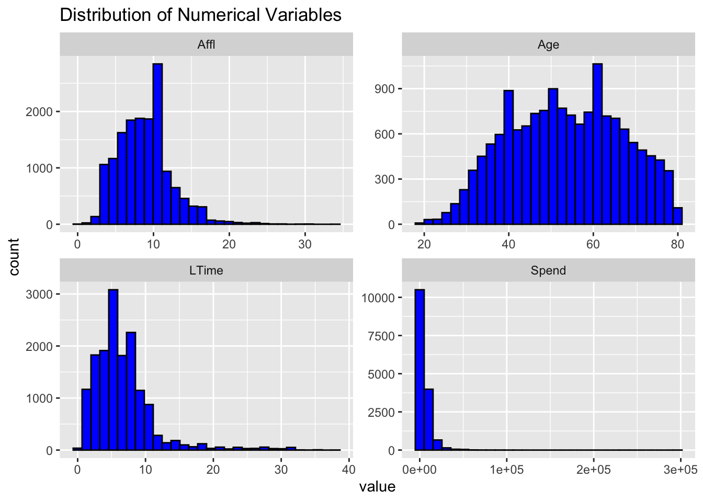
Affluence Distribution
The distribution of affluence scores among customers is right-skewed. This skewness indicates that the majority of customers have relatively low affluence scores, with a small number of outliers exhibiting significantly higher scores. This pattern suggests a concentration of lower-affluence individuals, with only a few high-affluence customers.
To effectively engage with this diverse customer base, marketing strategies should be dichotomised. For high-affluence customers, premium offerings and personalised services can be very attractive, enhancing their engagement and loyalty. Conversely, for the majority with lower affluence scores, providing affordable and appealing products will likely increase their satisfaction and retention.
Age Distribution
The age distribution within the customer base is approximately normal, exhibiting a bell-shaped curve. This indicates that the ages are symmetrically distributed around a central peak, which is around 40-50 years old. The normal distribution suggests that middle-aged individuals constitute a significant portion of the customer base.
Given this significant representation, marketing campaigns and product developments should be tailored to the needs and preferences of the 40-50 age group. By aligning products and marketing messages with the interests and lifestyles of this demographic, businesses can drive higher engagement and sales.
Loyalty Time (LTime) Distribution
The distribution of loyalty time (LTime) shows a bimodal pattern, with two distinct peaks. This indicates that there are two common values or clusters around which customer loyalty times are centered. The presence of these two peaks suggests the existence of two subpopulations with different loyalty characteristics.
To maximise customer retention, it is crucial to understand the factors driving these two loyalty peaks. Designing loyalty programs that cater specifically to both short-term and long-term customers can address their unique needs and motivations. Tailored incentives and rewards for each group can enhance overall customer loyalty and retention rates.
Spend Distribution
The spend distribution among customers is left-skewed. This means that most data points represent higher spend values, while there are a few outliers with significantly lower spend values. The skewness towards higher spending indicates that a considerable number of customers are high spenders, despite the presence of low-spending outliers.
By analysing spending behavior, businesses can identify high-spending customers for targeted promotions and loyalty rewards. These high-value customers can be incentivised with exclusive offers and benefits, encouraging them to maintain or increase their spending. Additionally, understanding the reasons behind lower spending can help in formulating strategies to engage low-spending customers and boost their spending levels.
Distribution of Categorical Variables
# Plot bar charts for categorical variables
data %>%
select(Gender, PromClass, PromSilver, PromTin, PromGold, TargetBuy) %>%
gather(key = "variable", value = "value") %>%
ggplot(aes(x = value)) +
geom_bar(fill = "blue", color = "black") +
facet_wrap(~ variable, scales = "free") +
labs(title = "Distribution of Categorical Variables")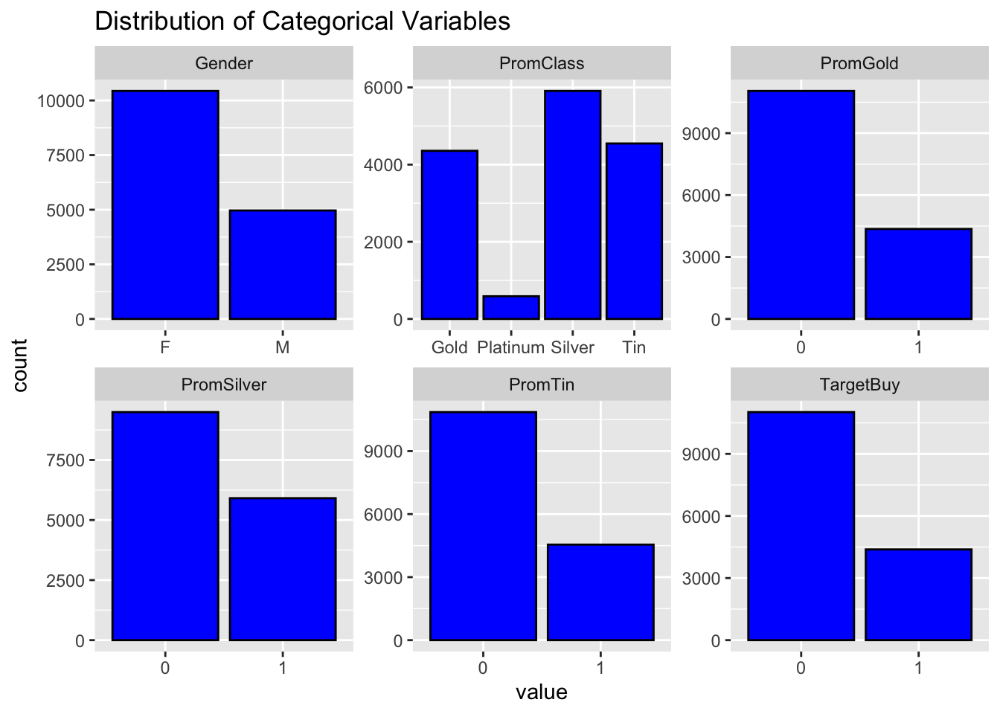
Gender Distribution
The gender distribution among customers is balanced between males and females. Understanding gender preferences is crucial for guiding targeted marketing efforts. For instance, product recommendations can be tailored based on gender-specific interests, such as promoting cosmetics to female customers and electronics to male customers.
Promotion Class (PromClass)
The promotion class distribution illustrates customer engagement with various promotion tiers (e.g., Gold, Silver, Platinum). High engagement levels in specific promotion classes can help identify high-value customers, such as those in the Platinum tier, who can be targeted with personalized offers to enhance loyalty and spending.
Promotion Levels (PromSilver, PromTin, PromGold)
The distribution of different promotion levels (Silver, Tin, Gold) highlights customer preferences and engagement. The varying counts indicate which promotions resonate most with customers. Businesses can adjust their promotional strategies based on the popularity and effectiveness of each level, focusing resources on the most impactful promotions.
Purchase Behavior (TargetBuy) The purchase behavior chart shows whether customers made a purchase after being exposed to promotions. A higher proportion of customers in the “Yes” category suggests successful promotional conversions. Segmenting customers based on their purchase behavior can inform retention strategies and loyalty programs, focusing on those who responded positively to promotions.
Contextual Implications
These categorical variables provide valuable insights into customer preferences, behaviors, and responsiveness to promotions. Segmentation strategies can be customized based on these distributions:
Gender-Specific Campaigns: Tailoring campaigns to gender-specific interests to increase engagement and conversion rates. Promotion Class Targeting: Identifying high-value customers in premium promotion classes (e.g., Platinum) for personalised offers and exclusive deals. Effective Promotion Strategies: Adjusting promotional strategies based on the popularity of each promotion level to maximize impact. Behavior-Based Retargeting: Focusing on customers who have previously responded positively to promotions (TargetBuy = Yes) for retention and loyalty programs.
Scatter plot matrix for numerical variables
numerical_vars <- data %>%
select(Affl, Age, LTime, Spend)
ggpairs(numerical_vars,
title = "Scatter Plot Matrix of Numerical Variables",
upper = list(continuous = wrap("cor", size = 3, color = "steelblue", alpha = 0.6)),
lower = list(continuous = wrap("points", color = "steelblue", alpha = 0.6)),
diag = list(continuous = wrap("barDiag", fill = "steelblue", color = "black")),
axisLabels = 'show') +
theme_minimal()## `stat_bin()` using `bins = 30`. Pick better value with `binwidth`.
## `stat_bin()` using `bins = 30`. Pick better value with `binwidth`.
## `stat_bin()` using `bins = 30`. Pick better value with `binwidth`.
## `stat_bin()` using `bins = 30`. Pick better value with `binwidth`.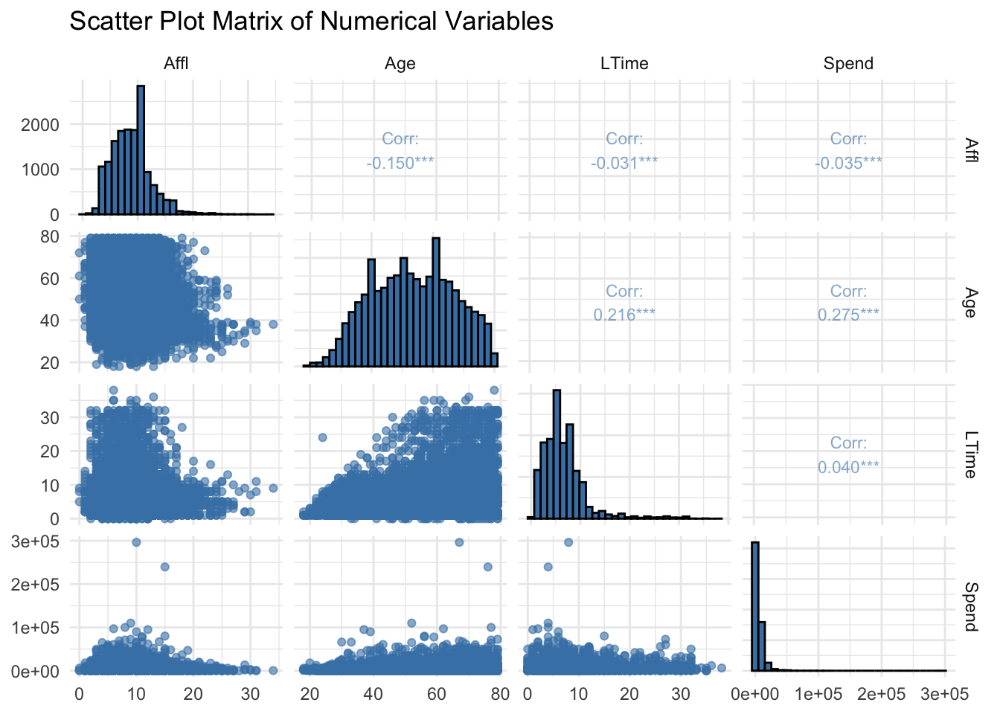
Our analysis revealed key relationships between customer demographics and behavior. A weak negative linear relationship between affluence and age (correlation coefficient: -0.15) suggested that younger customers tended to have higher affluence levels. Additionally, age was positively correlated with both loyalty time (correlation coefficient: 0.216) and spending (correlation coefficient: 0.275), indicating that older individuals were likely to be more loyal and spend more. Although loyalty time showed only a slight positive trend with spending (correlation coefficient: 0.040), it remained an important factor to consider in conjunction with other metrics.
These insights had significant business implications. Tailoring marketing strategies to target younger affluent customers with premium products, while focusing loyalty programs on older customers to enhance retention, could optimise engagement and sales. Personalised promotions aimed at older demographics were likely to drive higher revenue, given their tendency to spend more. By leveraging these relationships, businesses could develop more effective and targeted approaches, improving customer satisfaction and profitability.
Box plots to examine the relationship between categorical and numerical variables
data %>%
gather(key = "variable", value = "value", -Gender, -PromClass, -Gender_code, -PromSilver, -PromTin, -PromGold, -TargetBuy) %>%
ggplot(aes(x = PromClass, y = value, fill = PromClass)) +
geom_boxplot() +
facet_wrap(~ variable, scales = "free") +
labs(title = "Box Plots of Numerical Variables by Promotion Class") +
theme_minimal() +
scale_fill_brewer(palette = "Set3") +
theme(axis.text.x = element_text(angle = 45, hjust = 1)) # Add this line for rotated x-axis labels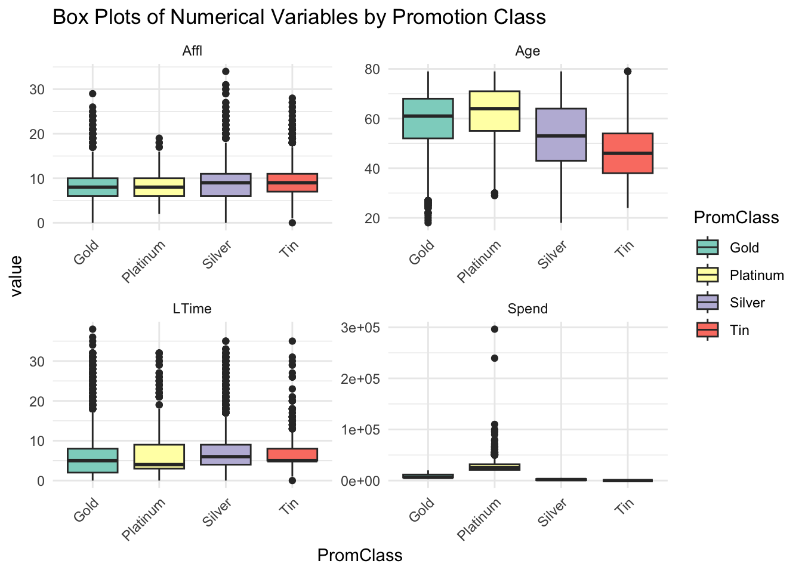
Our analysis utilised box plots to gain insights into customer affluence levels and spending behaviors across different promotion classes. The left group of box plots represented affluence levels (“Affl”), while the right group depicted spending behaviors (“Spend”). Each group was further divided by promotion classes: Gold, Platinum, Silver, and Tin.
For affluence levels, variations were observed across promotion classes. The “Gold” class exhibited the highest median affluence level, indicating a potential target for premium products. In contrast, the “Tin” class generally had the lowest median affluence level. In terms of spending behaviors, outliers were prominent across all classes, particularly in the “Gold” and “Platinum” categories. Understanding these patterns can inform marketing strategies, such as targeting high-affluence customers for premium offerings and addressing spending behavior differences across promotion classes. Additionally, considering outliers for personalized offers presents an opportunity to capture potential high spenders and enhance customer engagement.
Correlation matrix for numerical variables
## Affl Age LTime Spend
## Affl 1.00000000 -0.1504758 -0.03053491 -0.03501427
## Age -0.15047583 1.0000000 0.21577973 0.27544015
## LTime -0.03053491 0.2157797 1.00000000 0.03993943
## Spend -0.03501427 0.2754402 0.03993943 1.00000000# Visualize the correlation matrix
corrplot::corrplot(cor_matrix, method = "circle", type = "upper",
tl.col = "black", tl.srt = 45, addCoef.col = "black",
col = colorRampPalette(c("red", "white", "blue"))(200))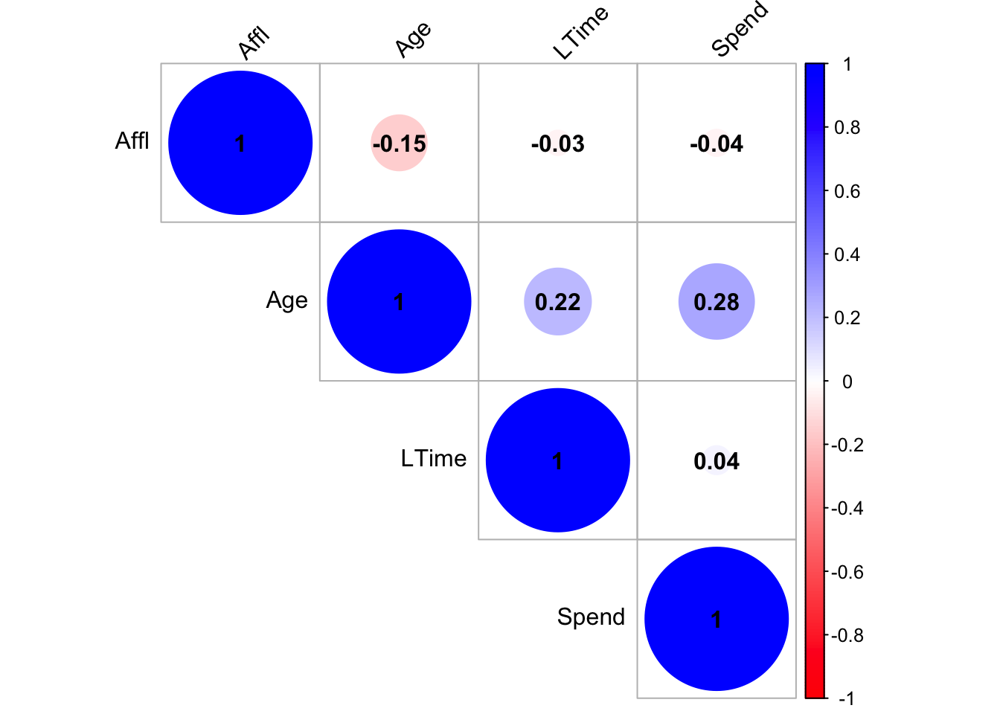
The correlation matrix explored the relationships among four key numerical variables: “Affi” (affluence level), “Age,” “LTime” (loyalty time), and “Spend” (spending behavior). The diagonal line showcased perfect positive correlations (correlation coefficient = 1), as each variable was compared to itself. Off-diagonal elements highlighted correlations between different pairs of variables.
Analysis revealed several noteworthy correlations: “Affl” and “Age” exhibited a small negative correlation of approximately -0.15, indicating that as affluence level increased, age tended to decrease slightly. Similarly, “Affl” and “Spend” displayed a small negative correlation of approximately -0.04. Conversely, “Age” and “Spend” demonstrated a slightly larger positive correlation of approximately 0.28, suggesting that older individuals tended to spend slightly more.
Furthermore, “LTime” and “Spend” showed a very weak positive correlation of approximately 0.04. These correlations, though modest, offered valuable insights for businesses. Leveraging this information, businesses could tailor marketing strategies, craft personalised offers, and optimise loyalty program initiatives to enhance customer engagement and satisfaction.
Feature Engineering and Scaling
Following data exploration, feature engineering was performed. Age groups were created by binning the Age variable into ranges (e.g., 18-30, 30-40) and then encoded numerically. This allowed the inclusion of Age as a categorical feature in the clustering analysis.
data <- data %>%
mutate(AgeGroup = cut(Age, breaks = c(17, 30, 40, 50, 60, 70, 80),
labels = c("18-30", "30-40", "40-50", "50-60", "60-70", "70-80"),
right = FALSE))
# Ensure there are no NA values in the Age column
sum(is.na(data$Age))## [1] 0# Drop unnecessary columns
data <- data %>%
select(-Gender, -PromClass)
# Display the head of the updated dataset
head(data)## # A tibble: 6 × 10
## Gender_code PromSilver PromTin PromGold Affl Age LTime Spend TargetBuy
## <dbl> <dbl> <dbl> <dbl> <dbl> <dbl> <dbl> <dbl> <dbl>
## 1 1 1 0 0 5 70 8 0.02 1
## 2 0 0 1 0 10 65 7 0.01 1
## 3 1 0 1 0 11 68 8 0.01 0
## 4 1 0 1 0 11 74 8 0.01 0
## 5 0 0 1 0 13 62 5 0.01 0
## 6 0 1 0 0 10 62 3 2039. 0
## # ℹ 1 more variable: AgeGroup <fct>Spend Distribution by Age Group insights
# Create the box plot
box_plot <- ggplot(data, aes(x = AgeGroup, y = Spend)) +
geom_boxplot(fill = "#0073C2FF", color = "black") + # Box plot fill and border color
labs(title = "Box Plot: Spend Distribution by Age Group",
x = "Age Group",
y = "Spend ") +
#theme_minimal() + # Minimal theme
theme(
plot.title = element_text(hjust = 0.5, size = 14, face = "bold"), # Center and style title
axis.title.x = element_text(size = 12, face = "bold"), # Style x-axis title
axis.title.y = element_text(size = 12, face = "bold") # Style y-axis title
)
# Print the box plot
print(box_plot)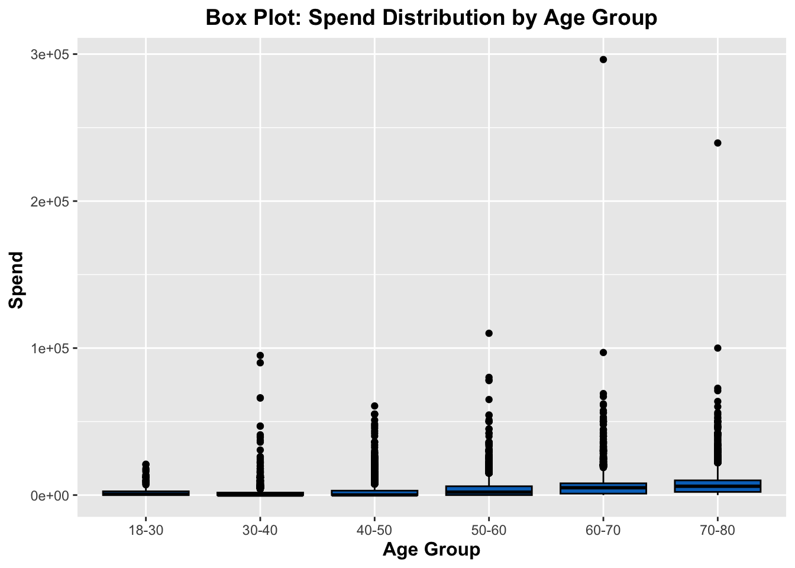
Interpretation of the box plots revealed insights into age-specific spending behavior. The ‘<18’ group exhibited the lowest median spending, while the ‘>65’ group demonstrated the highest. In contrast, the ‘18-34’ and ‘35-50’ groups showcased moderate spending levels with similar interquartile ranges. Notably, the ‘>65’ group displayed a wider spread of spending behavior, suggesting greater variability within this demographic.
Understanding these spending patterns across age groups was imperative for targeted marketing strategies. Businesses could leverage these insights to tailor promotions, identify high-value customers, and address differences in spending behavior based on various life stages, ultimately enhancing customer engagement and satisfaction.
Max-Min scaling
Additionally, Max-Min scaling was applied to ensure all numerical features (Affluence, Loyalty Time, Spend) were on a comparable scale. This normalisation step transformed the data into a 0-1 range, which was crucial for distance-based clustering algorithms to function effectively.
# Select numerical features for scaling
numerical_features <- data %>%
select(Affl, LTime, Spend)
# Function to perform Max-Min scaling
max_min_scaling <- function(x) {
(x - min(x)) / (max(x) - min(x))
}
# Apply Max-Min scaling to numerical features
scaled_features <- as.data.frame(lapply(numerical_features, max_min_scaling))
# Rename columns
colnames(scaled_features) <- c("Affl_scaled", "LTime_scaled", "Spend_scaled")
# Combine scaled features with the rest of the dataset
scaled_data <- cbind(data, scaled_features)
# Display the head of the updated dataset
head(scaled_data)## Gender_code PromSilver PromTin PromGold Affl Age LTime Spend TargetBuy
## 1 1 1 0 0 5 70 8 0.02 1
## 2 0 0 1 0 10 65 7 0.01 1
## 3 1 0 1 0 11 68 8 0.01 0
## 4 1 0 1 0 11 74 8 0.01 0
## 5 0 0 1 0 13 62 5 0.01 0
## 6 0 1 0 0 10 62 3 2038.76 0
## AgeGroup Affl_scaled LTime_scaled Spend_scaled
## 1 70-80 0.1470588 0.21052632 3.374800e-08
## 2 60-70 0.2941176 0.18421053 0.000000e+00
## 3 60-70 0.3235294 0.21052632 0.000000e+00
## 4 70-80 0.3235294 0.21052632 0.000000e+00
## 5 60-70 0.3823529 0.13157895 0.000000e+00
## 6 60-70 0.2941176 0.07894737 6.880374e-03# Drop original columns and AgeGroup
scaled_data <- scaled_data %>%
select(-Affl, -LTime, -Spend, -AgeGroup)
# Display the head of the updated dataset
head(scaled_data)## Gender_code PromSilver PromTin PromGold Age TargetBuy Affl_scaled
## 1 1 1 0 0 70 1 0.1470588
## 2 0 0 1 0 65 1 0.2941176
## 3 1 0 1 0 68 0 0.3235294
## 4 1 0 1 0 74 0 0.3235294
## 5 0 0 1 0 62 0 0.3823529
## 6 0 1 0 0 62 0 0.2941176
## LTime_scaled Spend_scaled
## 1 0.21052632 3.374800e-08
## 2 0.18421053 0.000000e+00
## 3 0.21052632 0.000000e+00
## 4 0.21052632 0.000000e+00
## 5 0.13157895 0.000000e+00
## 6 0.07894737 6.880374e-03Clustering Analysis
Assessing Clustering Tendency
# Take a random sample of the data to reduce memory usage
set.seed(123) # for reproducibility
sampled_data <- scaled_data %>% sample_n(1000)
# Compute the dissimilarity matrix on the sampled data
dissimilarity_matrix <- dist(sampled_data %>% select(Affl_scaled, LTime_scaled, Spend_scaled))
# Visualize the dissimilarity matrix
fviz_dist(dissimilarity_matrix)
In the preclustering process, the dissimilarity matrix played an important role by quantifying the differences between data points. Each cell represented the dissimilarity between two points, guiding subsequent clustering steps. The color scale, ranging from red to blue, visually represented dissimilarity levels, confirming the dataset’s clusterability.
Determining the Optimal Number of Clusters
A crucial stage in the cluster analysis process is determining the ideal number of clusters, or k. This decision is based on three well-established techniques: the gap statistic approach, the average silhouette method, and the elbow method.
The within-cluster sum of squares (WSS) for different values of k is analyzed using the elbow approach. WSS usually reduces as k increases. The ideal k is thought to be at the elbow point, when this drop plateaus. Although this strategy is easy to use, interpretations of it can be subjective.
The methodologies of silhouette and gap statistics provide more objective standards. Each data point is given a silhouette coefficient using the silhouette method, which determines how well it fits into the designated cluster. Next, to find the optimal k, the average silhouette coefficient across all points is maximised.
The within-cluster variation of the actual clustering is compared to a null distribution with random cluster assignments using the gap statistic approach. The most unique clustering solution is indicated by the k with the largest gap statistic.
Elbow Method
# Apply Elbow method
set.seed(123) # for reproducibility
elbow_plot <- fviz_nbclust(scaled_data, kmeans, method = "wss") +
geom_vline(xintercept = 3, linetype = "dashed", color = "red") # Add x-axis intercept line for guidance
elbow_plot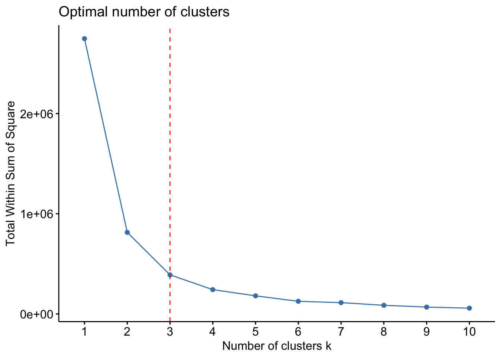 The Elbow Method revealed that the optimal number of clusters is at K=2. The plot of Within-Cluster Sum of Squares (WCSS) starts high when the number of clusters is low and drops sharply as the number of clusters increases. Beyond K=2, the decrease in WCSS becomes less significant, indicating that additional clusters do not provide substantial improvements in compactness. The “elbow point” at K=2 forms a distinct ‘elbow’ shape on the plot, suggesting that this is the most appropriate number of clusters for the dataset. This finding helps in identifying a balance between cluster compactness and simplicity, ensuring meaningful segmentation.
Average silhouette method
# Apply Average silhouette method
set.seed(123) # for reproducibility
avg_silhouette_plot <- fviz_nbclust(scaled_data, kmeans, method = "silhouette") +
geom_vline(xintercept = 2, linetype = "dashed", color = "red") # Add x-axis intercept line for guidance
avg_silhouette_plot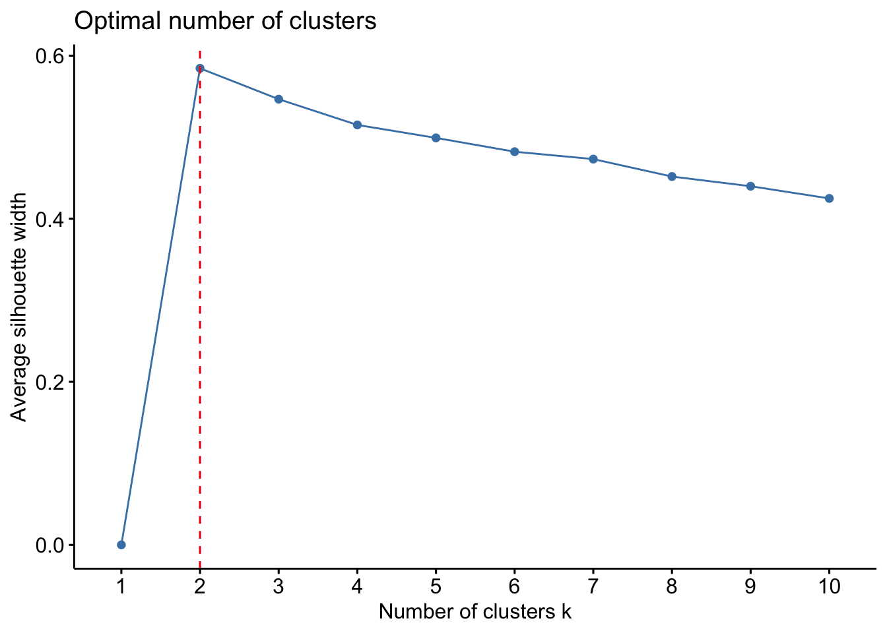
The average silhouette method plot indicates that the optimal number of clusters is at \(K = 2\). The curve shows a sharp increase from \(K = 1\) to \(K = 2\), with the average silhouette width peaking at this point. Beyond \(K = 2\), the silhouette width gradually decreases, suggesting that additional clusters do not improve the clustering quality significantly. The silhouette method thus supports the conclusion that two clusters provide the best balance of cohesion and separation within the data. This finding can guide the segmentation process, ensuring that the data points are grouped in a manner that maximizes intra-cluster similarity and inter-cluster dissimilarity.
Gap statistic method
# Apply Gap statistic method
set.seed(123) # for reproducibility
gap_statistic_plot <- fviz_nbclust(scaled_data, kmeans, method = "gap_stat", nboot = 50) +
geom_vline(xintercept = 3, linetype = "dashed", color = "red") # Add x-axis intercept line for guidance
gap_statistic_plot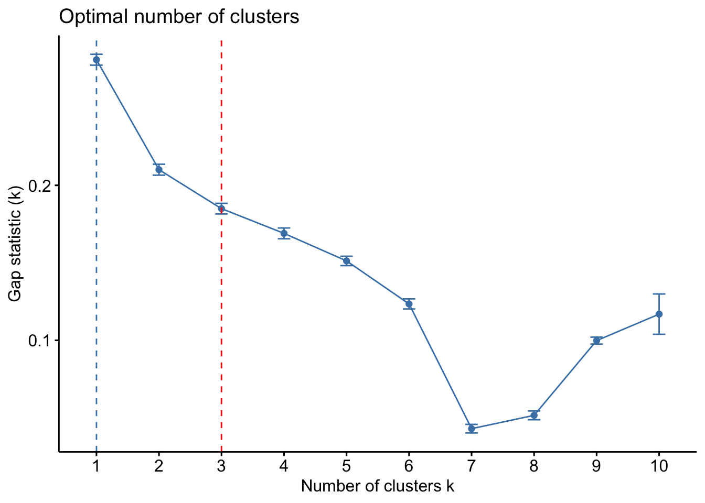 The Gap Statistic method plot shows the optimal number of clusters at \(K = 2\). The curve depicts a substantial decrease in the Gap Statistic value from \(K = 1\) to \(K = 2\). Beyond \(K = 2\), the Gap Statistic continues to decrease but at a much slower rate, indicating diminishing returns with the addition of more clusters. The optimal number of clusters is where the Gap Statistic value starts to level off, signifying that the structure of the data is best captured with two clusters.
Furthermore, silhouette analysis indicated a preference for two clusters compared to three.
Dendrogram
The core clustering analysis utilised Ward’s method of hierarchical clustering. This method was chosen for its ability to minimise variance within clusters, resulting in well-separated groups. The distance matrix was computed using the scaled data, followed by the application of hierarchical clustering.
A dendrogram was then plotted to visualise the hierarchical clustering process. This graphical representation depicted how data points were grouped into clusters at various similarity levels.
# Perform Hierarchical Clustering using Ward's method
dist_matrix <- dist(scaled_data)
hc_ward <- hclust(dist_matrix, method = "ward.D2")
# Cut the dendrogram to create clusters
num_clusters <- 2 # Define the number of clusters
hcut <- cutree(hc_ward, k = num_clusters)
# Define colors for clusters
cluster_colors <- c("#FF9999", "#66CCCC", "#99FF99")
# Define a custom plot function to color the clusters
plot_dendrogram <- function(hc, title, cluster_colors) {
dend <- as.dendrogram(hc)
dend_colored <- color_branches(dend, k = num_clusters, groupLabels = FALSE, col = cluster_colors)
plot(dend_colored, main = title)
}
plot_dendrogram(hc_ward, "Hierarchical Clustering Dendrogram (Ward's Method)", cluster_colors)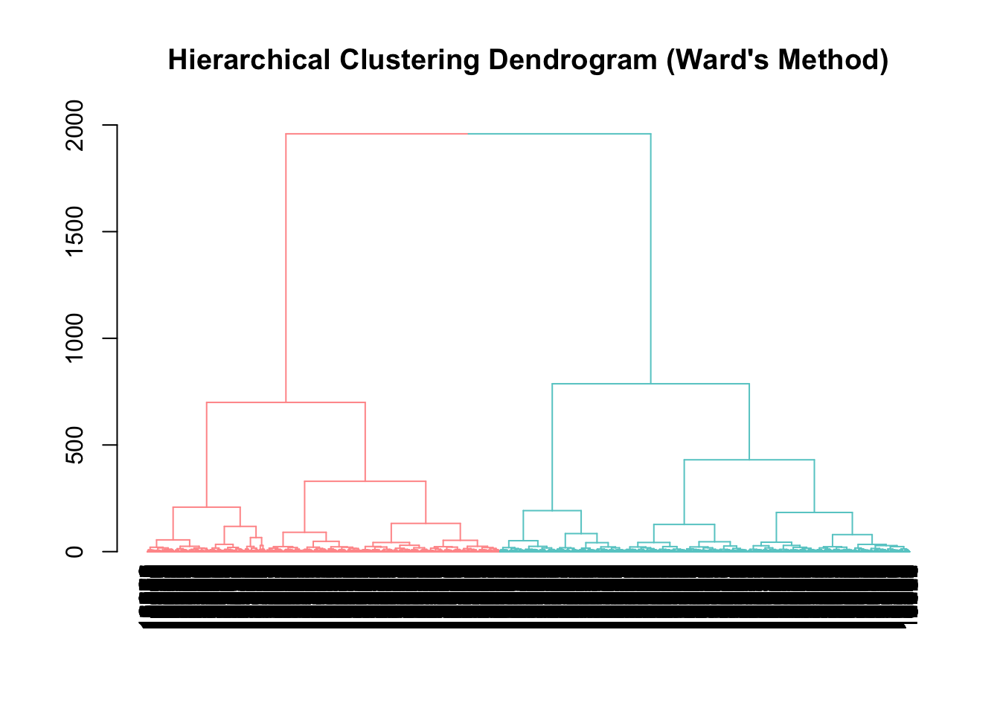 The provided dendrogram depicts a hierarchical clustering of the data. Two main clusters emerge at a relatively high distance on the vertical axis, signifying a strong distinction between their constituent data points.
Further substructure is evident within these main clusters. The left cluster exhibits a clearer division into two subclusters at a lower distance, suggesting a weaker but noticeable difference in their data points. While the right cluster also shows some substructure, the separation is less pronounced compared to the left side.
Cluster Evaluation Metrics
# Cut the dendrogram to obtain clusters
clusters <- cutree(hc_ward, k = 2)
# Compute Silhouette Score
silhouette <- silhouette(clusters, dist_matrix)
silhouette_score <- mean(silhouette[, "sil_width"])
# Compute Calinski-Harabasz Index
calinski_harabasz <- cluster.stats(dist_matrix, clusters)$ch
# Compute Dunn Index
dunn_index <- cluster.stats(dist_matrix, clusters)$dunn
# Print Evaluation Metrics
print(paste("Silhouette Score:", silhouette_score))## [1] "Silhouette Score: 0.576552220210891"## [1] "Calinski-Harabasz Index: 35572.7266122145"## [1] "Dunn Index: 0.0293590202720429"The Silhouette score assessed the cohesion and separation of clusters, with higher scores indicating better-defined clusters. It measured the similarity of data points within clusters compared to those in other clusters. The computed Silhouette Score of 0.577 indicated well-defined clusters with substantial internal cohesion and clear boundaries between clusters.
The Calinski-Harabasz Index, also known as the Variance Ratio Criterion, evaluated the dispersion and compactness of clusters. A higher index value signified dense and well-separated clusters. The obtained Calinski-Harabasz Index of 35,573 affirmed the presence of compact and distinct clusters within the dataset.
Furthermore, the Dunn Index measured the compactness and separation of clusters, providing additional insights into cluster validity. While the Dunn Index value of 0.029 indicated moderate compactness and separation, it complemented the Silhouette Score and Calinski-Harabasz Index in confirming the effectiveness of the clustering algorithm.
Overall, the combined analysis of these three metrics validates the clustering solution, highlighting its ability to partition the dataset into cohesive and distinct clusters. These findings support the utility of the clustering algorithm in uncovering meaningful patterns and structures within the data.
Cluster Visualisation
# Create Scatter Plot Matrix (SPLOM) for specified variables
pairs(
scaled_data[, c("Affl_scaled", "LTime_scaled", "Spend_scaled", "Age")],
col = cluster_colors[hcut], # Set color for points based on cluster
pch = 20, # Set point character
lower.panel = NULL # Remove lower panel to leave room for annotations
)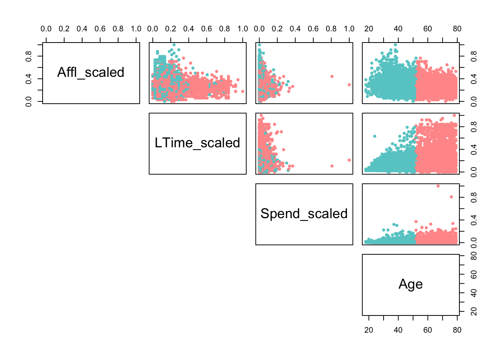 The scatterplot matrix suggests that there are relationships and clustering in the dataset. It indicates that ‘Age’ has a positive relationship with both ‘Spending Behavior’ and ‘Loyalty Time’ and weak negative relationship wit ‘Affluence’, with possible clustering within these relationships. These insights can guide further analysis, such as targeted marketing strategies or customer segmentation based on age-related spending patterns, affluence and loyalty behavior.
Basic Statistics of Clusters
# Add cluster labels to the original data
data_with_clusters <- scaled_data %>%
mutate(cluster = factor(clusters))
# Compute basic statistics for each cluster
basic_stats <- data_with_clusters %>%
group_by(cluster) %>%
summarise(
Affl_scaled_mean = mean(Affl_scaled),
Affl_scaled_median = median(Affl_scaled),
LTime_scaled_mean = mean(LTime_scaled),
LTime_scaled_median = median(LTime_scaled),
Spend_scaled_mean = mean(Spend_scaled),
Spend_scaled_median = median(Spend_scaled),
Age_mean = mean(Age),
Age_median = median(Age)
)
print(basic_stats)## # A tibble: 2 × 9
## cluster Affl_scaled_mean Affl_scaled_median LTime_scaled_mean
## <fct> <dbl> <dbl> <dbl>
## 1 1 0.248 0.235 0.191
## 2 2 0.273 0.265 0.151
## # ℹ 5 more variables: LTime_scaled_median <dbl>, Spend_scaled_mean <dbl>,
## # Spend_scaled_median <dbl>, Age_mean <dbl>, Age_median <dbl>The analysis revealed 2 distinct clusters within the dataset based on key customer attributes. Cluster 1 represents customers with a moderate wealth status, with a mean Affluence scaled value of 0.248 and a median of 0.235. These customers exhibit moderate loyalty to the brand, with a mean Loyalty Time scaled value of 0.191. However, their spending habits are relatively low, with a mean Spend scaled value of 0.021. The average age of customers in Cluster 1 is approximately 63.82 years.
In contrast, Cluster 2 comprises customers with slightly higher wealth status, as indicated by a mean Affluence scaled value of 0.273 and a median of 0.265. These customers show shorter loyalty to the brand, with a mean Loyalty Time scaled value of 0.151. Their spending behavior is notably lower, with a mean Spend scaled value of 0.008. The average age of customers in Cluster 2 is around 41.44 years.
These findings provide valuable insights for targeted marketing strategies, with Cluster 1 representing an older demographic with moderate spending potential and loyalty, while Cluster 2 comprises a younger segment with slightly higher affluence but lower loyalty and spending propensity.
Visualisation of Basic Statistics
# Scale the Age variable
scaled_age <- scale(basic_stats$Age_mean)
# Combine scaled Age with other mean values
basic_stats_scaled <- basic_stats %>%
mutate(Age_scaled = scaled_age)
# Convert basic_stats_scaled to long format for plotting
basic_stats_long <- basic_stats_scaled %>%
pivot_longer(cols = c(Affl_scaled_mean, LTime_scaled_mean, Spend_scaled_mean, Age_scaled),
names_to = "Attribute",
values_to = "Mean_Value")
# Plot the bar chart
ggplot(basic_stats_long, aes(x = Attribute, y = Mean_Value, fill = cluster)) +
geom_bar(stat = "identity", position = "dodge") +
labs(title = "Mean Values of Key Attributes by Cluster",
x = "Attribute",
y = "Mean Value") +
theme_minimal() +
theme(legend.position = "bottom") +
scale_fill_manual(values = cluster_colors) # Use the cluster colors defined earlier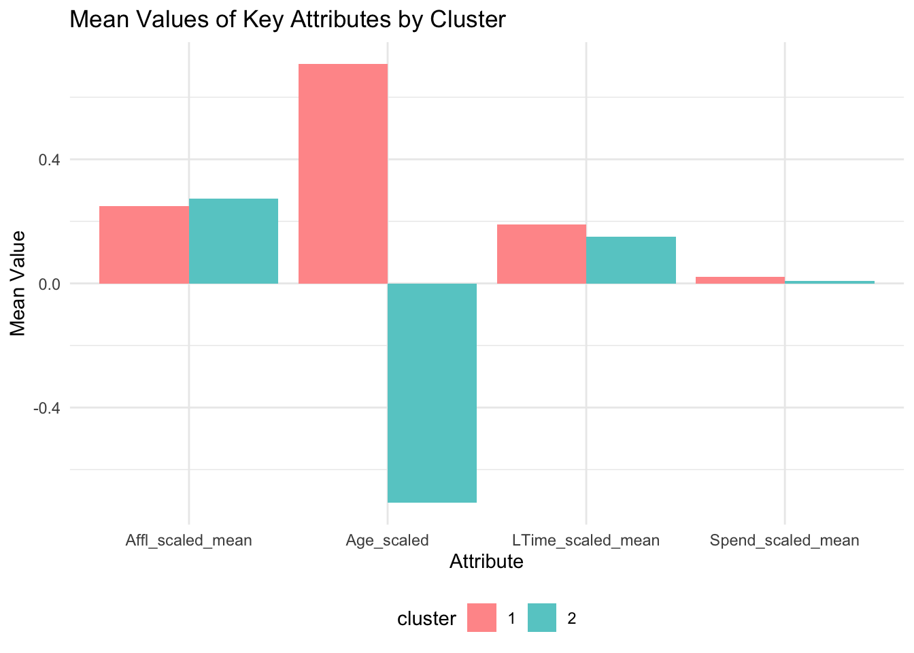
Superconsumer Analysis
Superconsumers, defined as those spending above the 75th percentile within each cluster, were analyzed and compared to other consumers. Key metrics such as spending, affluence, and loyalty time were summarised for both groups.
The comparative analysis, visualized through bar plots, revealed distinct behavioural patterns between superconsumers and other consumers.
# Step 1: Define superconsumers within each cluster
data_with_clusters <- data_with_clusters %>%
group_by(cluster) %>%
mutate(
superconsumer = if_else(Spend_scaled > quantile(Spend_scaled, 0.75), "Superconsumer", "Other")
)
# Step 2: Summarize the characteristics of superconsumers within each cluster
superconsumer_summary <- data_with_clusters %>%
filter(superconsumer == "Superconsumer") %>%
group_by(cluster) %>%
summarise(
count = n(),
mean_spend = mean(Spend_scaled),
median_spend = median(Spend_scaled),
mean_affluence = mean(Affl_scaled),
median_affluence = median(Affl_scaled),
mean_loyalty_time = mean(LTime_scaled),
median_loyalty_time = median(LTime_scaled)
)
# Step 3: Summarize the characteristics of other consumers within each cluster
other_consumer_summary <- data_with_clusters %>%
filter(superconsumer == "Other") %>%
group_by(cluster) %>%
summarise(
count = n(),
mean_spend = mean(Spend_scaled),
median_spend = median(Spend_scaled),
mean_affluence = mean(Affl_scaled),
median_affluence = median(Affl_scaled),
mean_loyalty_time = mean(LTime_scaled),
median_loyalty_time = median(LTime_scaled)
)
# Combine summaries for plotting
combined_summary <- bind_rows(
superconsumers = superconsumer_summary,
other_consumers = other_consumer_summary,
.id = "group"
)
# Melt the summary data for plotting
combined_summary_long <- combined_summary %>%
pivot_longer(cols = -c(cluster, group), names_to = "metric", values_to = "value")
# Plot the comparison
ggplot(combined_summary_long, aes(x = cluster, y = value, fill = group)) +
geom_bar(stat = "identity", position = "dodge") +
facet_wrap(~ metric, scales = "free_y") +
theme_minimal() +
labs(title = "Comparison of Superconsumers and Other Consumers by Cluster",
x = "Cluster",
y = "Value",
fill = "Group")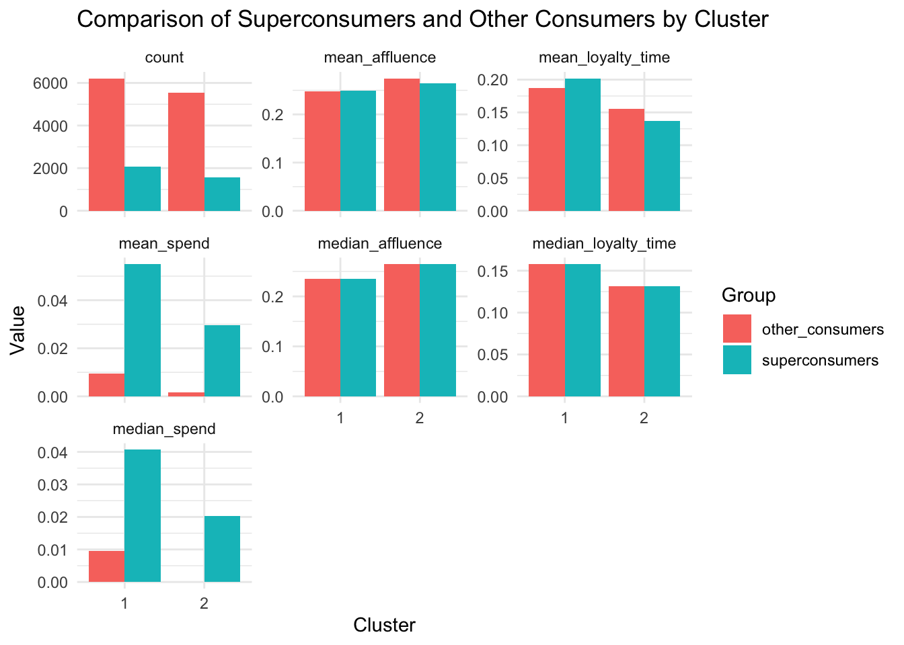 The bar chart analysis revealed distinct patterns between superconsumers and other customers. Superconsumers consistently outspent others across all customer clusters, highlighting their significant contribution to overall revenue. Furthermore, superconsumers displayed relatively similar average and median affluence levelsand loyalty for both clusters.
This analysis successfully identified and profiled superconsumers within each cluster, providing valuable insights into their spending habits, affluence, and loyalty. These findings can be used to develop targeted marketing campaigns and customer relationship management strategies tailored to attract and retain these high-value customers, leading to improved business performance.
Conclusion and Business Implications: Tailored Strategies for Organic Consumers
Our customer segmentation analysis, based on key attributes, revealed two distinct customer clusters. These insights offer valuable guidance for the organic company to develop targeted marketing strategies.
Cluster 1: Moderate Affluence, Loyalty, and Spending (Older Demographic)
This cluster represents an older customer base with moderate wealth, average loyalty to the brand, and relatively low spending habits. Here, the focus should be on building stronger relationships and fostering loyalty to convert them into higher-value customers. Personalised email campaigns highlighting past purchases and loyalty rewards can be effective in this regard. Additionally, offering exclusive discounts and promotions specifically tailored to this segment can incentivise them to spend more.
Cluster 2: Higher Affluence, Lower Loyalty and Spending (Younger Demographic)
Cluster 2 comprises a younger demographic with slightly higher wealth but lower loyalty and spending propensity. To attract and convert them into loyal customers, the organic company should emphasise the quality and unique offerings of its products. Social media marketing, a perfect platform to reach this tech-savvy audience, can be utilized to showcase the benefits of organic products. Introductory discounts and targeted promotions can further incentivise them to try the products for the first time.
Superconsumers Across Clusters
The analysis also identified superconsumers, high-value customers who consistently outspend others across all clusters. Retaining these valuable customers requires a dedicated approach. Implementing loyalty programs with tiered benefits and exclusive offers specifically targeted towards superconsumers can be a successful strategy.
By implementing these targeted marketing approaches based on customer segmentation, the organic company can create a more engaging and personalized customer experience. This, in turn, can lead to increased customer loyalty, improved brand perception, and ultimately, drive sales growth.